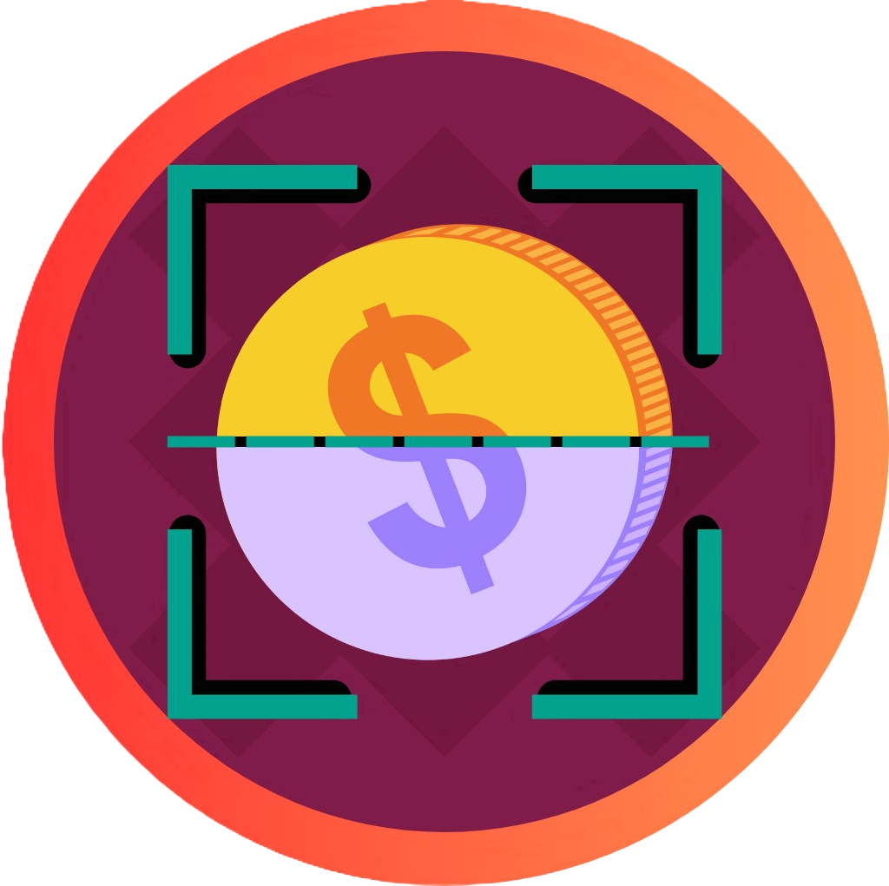

<ion-content [fullscreen]="true">

  <div class="login">

    

    <ion-card class="login">

      <h1>Inicio de Sesión</h1>
      <div *ngIf="this.cargaFin == true; then mostrar else esperar"></div>

      <ng-template #mostrar>
        <ion-select label="Acceso rápido" fill="outline" interface="action-sheet" (ionChange)="onQuickUser($event)">
          <ion-select-option *ngFor="let item of arrayTestUsers" [value]="item">{{item.perfil}}</ion-select-option>
        </ion-select>
      </ng-template>

      <ng-template #esperar>
        <ion-select label="Cargando..." fill="outline"></ion-select>
      </ng-template>
      
      <form class="needs-validation" [formGroup]="formLog">
        <ion-input label="Correo:" type="email" fill="outline" formControlName="email"></ion-input>
        <ion-input label="Clave:" type="password" fill="outline" formControlName="password"></ion-input>
        <ion-button shape="round" (click)="this.iniciarSesion()">Ingresar</ion-button>
      </form>  
    </ion-card>
  </div>
</ion-content>
